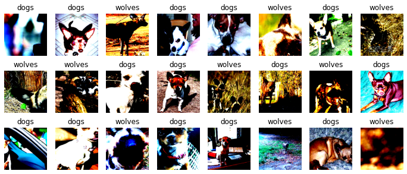
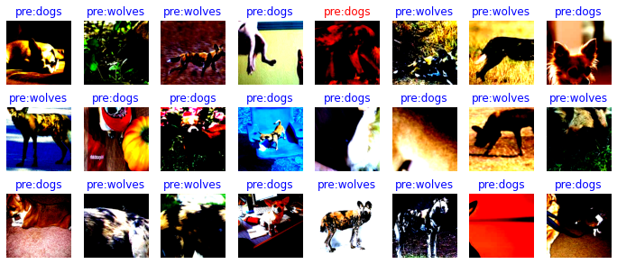
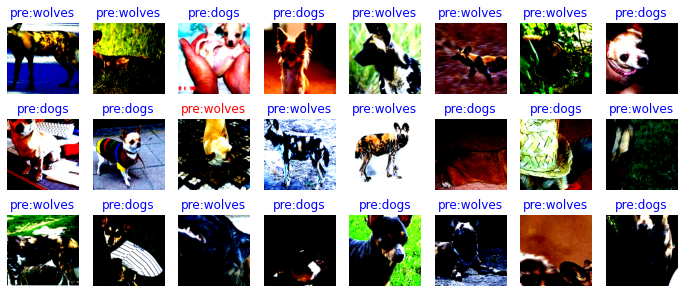

图像分类迁移学习

在实际场景中，为了减少从头开始训练所带来的时间成本，大多数情况下会基于已有的模型来进行迁移学习。本章将会以狗和狼的图像分类为例，讲解如何在MindSpore中加载预训练模型，并通过固定权重来实现迁移学习的目的。
准备环节
导入模块
import os
import math
import stat
import numpy as np
import matplotlib.pyplot as plt
import mindspore.ops as ops
import mindspore.nn as nn
import mindspore.dataset as ds
import mindspore.dataset.vision.c_transforms as CV
import mindspore.dataset.transforms.c_transforms as C
from mindspore.dataset.vision import Inter
from mindspore.common.initializer import Normal
from mindspore import dtype as mstype
from mindspore.train.callback import TimeMonitor, Callback
from mindspore import Model, Tensor, context, save_checkpoint, load_checkpoint, load_param_into_net
环境配置
我们使用GRAPH模式运行实验，使用Ascend环境。
context.set_context(mode=context.GRAPH_MODE, device_target="Ascend")
数据集准备
下载数据集
下载案例所用到的狗与狼分类数据集，数据集中的图像来自于ImageNet，每个分类有大约120张训练图像与30张验证图像。将下载后的数据集解压到当前目录下。
下载预训练模型
下载预训练模型的ckpt文件，将其保存在当前目录。
目录结构如下：
./
└─resnet50.ckpt
└─data
└─Canidae
└─train
│ └─dogs
│ └─wolves
└─val
└─dogs
└─wolves
加载数据
定义训练和验证数据集的路径。
train_data_path = 'data/Canidae/train' val_data_path = 'data/Canidae/val'
定义
create_dataset函数对数据进行处理。def create_dataset(data_path, batch_size=24, repeat_num=1, training=True): """定义数据集""" data_set = ds.ImageFolderDataset(data_path, num_parallel_workers=8, shuffle=True) # 对数据进行增强操作 image_size = 224 mean = [0.485 * 255, 0.456 * 255, 0.406 * 255] std = [0.229 * 255, 0.224 * 255, 0.225 * 255] if training: trans = [ CV.RandomCropDecodeResize(image_size, scale=(0.08, 1.0), ratio=(0.75, 1.333)), CV.RandomHorizontalFlip(prob=0.5), CV.Normalize(mean=mean, std=std), CV.HWC2CHW() ] else: trans = [ CV.Decode(), CV.Resize(256), CV.CenterCrop(image_size), CV.HWC2CHW() ] type_cast_op = C.TypeCast(mstype.int32) # 实现数据的map映射、批量处理和数据重复的操作 data_set = data_set.map(operations=trans, input_columns="image", num_parallel_workers=8) data_set = data_set.map(operations=type_cast_op, input_columns="label", num_parallel_workers=8) data_set = data_set.batch(batch_size, drop_remainder=True) data_set = data_set.repeat(repeat_num) return data_set
实例化数据集
train_ds = create_dataset(train_data_path)
可视化图像
通过matplotlib可视化部分增强后的训练数据。
data = next(train_ds.create_dict_iterator())
images = data["image"]
labels = data["label"]
print("Tensor of image", images.shape)
print("Labels:",labels)
class_name = {0:"dogs",1:"wolves"}
count = 1
# 输出测试图
plt.figure(figsize=(12,5))
for i in images:
plt.subplot(3,8,count)
plt.imshow(i.asnumpy().transpose(1,2,0))
plt.title(class_name[int(labels[count-1].asnumpy())])
plt.xticks([])
count += 1
plt.axis("off")
plt.show()
结果：
Tensor of image (24, 3, 224, 224)
Labels: [0 0 1 0 0 1 0 1 1 1 0 0 1 0 1 0 0 0 1 0 0 1 0 1]

定义网络
本教程使用的ResNet50网络位于Model Zoo中，可直接使用。
训练模型
定义apply_eval函数，用来验证模型的精度。
# 模型验证
def apply_eval(eval_param):
eval_model = eval_param['model']
eval_ds = eval_param['dataset']
metrics_name = eval_param['metrics_name']
res = eval_model.eval(eval_ds)
return res[metrics_name]
我们自定义一个数据收集的回调类EvalCallBack，用于实现下面两种信息：
训练过程中，每一个epoch结束之后，训练集的损失值和验证集的模型精度。
保存精度最高的模型。
class EvalCallBack(Callback):
"""
回调类，获取训练过程中模型的信息
"""
def __init__(self, eval_function, eval_param_dict, interval=1, eval_start_epoch=1, save_best_ckpt=True,
ckpt_directory="./", besk_ckpt_name="best.ckpt", metrics_name="acc"):
super(EvalCallBack, self).__init__()
self.eval_param_dict = eval_param_dict
self.eval_function = eval_function
self.eval_start_epoch = eval_start_epoch
if interval < 1:
raise ValueError("interval should >= 1.")
self.interval = interval
self.save_best_ckpt = save_best_ckpt
self.best_res = 0
self.best_epoch = 0
if not os.path.isdir(ckpt_directory):
os.makedirs(ckpt_directory)
self.best_ckpt_path = os.path.join(ckpt_directory, besk_ckpt_name)
self.metrics_name = metrics_name
# 删除ckpt文件
def remove_ckpoint_file(self, file_name):
os.chmod(file_name, stat.S_IWRITE)
os.remove(file_name)
# 每一个epoch后，打印训练集的损失值和验证集的模型精度，并保存精度最好的ckpt文件
def epoch_end(self, run_context):
cb_params = run_context.original_args()
cur_epoch = cb_params.cur_epoch_num
loss_epoch = cb_params.net_outputs
if cur_epoch >= self.eval_start_epoch and (cur_epoch - self.eval_start_epoch) % self.interval == 0:
res = self.eval_function(self.eval_param_dict)
print('Epoch {}/{}'.format(cur_epoch, num_epochs))
print('-' * 10)
print('train Loss: {}'.format(loss_epoch))
print('val Acc: {}'.format(res))
if res >= self.best_res:
self.best_res = res
self.best_epoch = cur_epoch
if self.save_best_ckpt:
if os.path.exists(self.best_ckpt_path):
self.remove_ckpoint_file(self.best_ckpt_path)
save_checkpoint(cb_params.train_network, self.best_ckpt_path)
# 训练结束后，打印最好的精度和对应的epoch
def end(self, run_context):
print("End training, the best {0} is: {1}, the best {0} epoch is {2}".format(self.metrics_name,
self.best_res,
self.best_epoch), flush=True)
可视化模型预测
定义
visualize_mode函数，可视化模型预测。def visualize_model(best_ckpt_path,val_ds): # 定义网络并加载参数，对验证集进行预测 net = resnet50(2) param_dict = load_checkpoint(best_ckpt_path) load_param_into_net(net,param_dict) loss = nn.SoftmaxCrossEntropyWithLogits(sparse=True,reduction='mean') model = Model(net, loss,metrics={"Accuracy":nn.Accuracy()}) data = next(val_ds.create_dict_iterator()) images = data["image"].asnumpy() labels = data["label"].asnumpy() class_name = {0:"dogs",1:"wolves"} output = model.predict(Tensor(data['image'])) pred = np.argmax(output.asnumpy(),axis=1) # 可视化模型预测 for i in range(len(labels)): plt.subplot(2,2,i+1) color = 'blue' if pred[i] == labels[i] else 'red' plt.title('pre:{}'.format(class_name[pred[i]]), color=color) plt.imshow(images[i].transpose(1,2,0)) plt.axis('off')
从训练好的ckpt文件里删除需要重置的参数。
def filter_checkpoint_parameter_by_list(origin_dict, param_filter): for key in list(origin_dict.keys()): for name in param_filter: if name in key: print("Delete parameter from checkpoint: ", key) del origin_dict[key] break
模型微调
加载预训练的模型并重置最终的全连接层。
net = resnet50(2)
num_epochs=20
# 加载预训练模型
param_dict = load_checkpoint('resnet50.ckpt')
# 获取全连接层的名字
filter_list = [x.name for x in net.end_point.get_parameters()]
# 删除预训练模型的全连接层
filter_checkpoint_parameter_by_list(param_dict, filter_list)
# 给网络加载参数
load_param_into_net(net,param_dict)
# 定义优化器和损失函数
opt = nn.Momentum(params=net.trainable_params(), learning_rate=0.001, momentum=0.9)
loss = nn.SoftmaxCrossEntropyWithLogits(sparse=True,reduction='mean')
# 实例化模型
model = Model(net, loss,opt,metrics={"Accuracy":nn.Accuracy()})
结果：
Delete parameter from checkpoint: end_point.weight
Delete parameter from checkpoint: end_point.bias
Delete parameter from checkpoint: moments.end_point.weight
Delete parameter from checkpoint: moments.end_point.bias
训练和评估
运行下面代码，开始模型训练。
train_ds = create_dataset(train_data_path) val_ds = create_dataset(val_data_path) eval_param_dict = {"model":model,"dataset":val_ds,"metrics_name":"Accuracy"} eval_cb = EvalCallBack(apply_eval, eval_param_dict,) # 训练模型 model.train(num_epochs,train_ds, callbacks=[eval_cb, TimeMonitor()], dataset_sink_mode=True)
结果：
Epoch 1/20 ---------- train Loss: 0.47486544 val Acc: 0.8333333333333334 epoch time: 8439.054 ms, per step time: 140.651 ms Epoch 2/20 ---------- train Loss: 0.20464368 val Acc: 0.8333333333333334 epoch time: 3805.755 ms, per step time: 63.429 ms Epoch 3/20 ---------- train Loss: 0.3345307 val Acc: 0.9166666666666666 epoch time: 3721.042 ms, per step time: 62.017 ms Epoch 4/20 ---------- train Loss: 0.7761406 val Acc: 0.8333333333333334 epoch time: 3302.892 ms, per step time: 55.048 ms Epoch 5/20 ---------- train Loss: 0.3566268 val Acc: 0.9 epoch time: 3375.371 ms, per step time: 56.256 ms Epoch 6/20 ---------- train Loss: 0.13434622 val Acc: 0.9333333333333333 epoch time: 4012.532 ms, per step time: 66.876 ms Epoch 7/20 ---------- train Loss: 0.20843573 val Acc: 0.85 epoch time: 3357.198 ms, per step time: 55.953 ms Epoch 8/20 ---------- train Loss: 0.96780926 val Acc: 0.95 epoch time: 3628.576 ms, per step time: 60.476 ms Epoch 9/20 ---------- train Loss: 1.4824448 val Acc: 0.8666666666666667 epoch time: 3403.053 ms, per step time: 56.718 ms Epoch 10/20 ---------- train Loss: 0.11375467 val Acc: 0.9166666666666666 epoch time: 3293.931 ms, per step time: 54.899 ms Epoch 11/20 ---------- train Loss: 0.14315866 val Acc: 0.8833333333333333 epoch time: 3308.482 ms, per step time: 55.141 ms Epoch 12/20 ---------- train Loss: 0.13462222 val Acc: 0.95 epoch time: 3922.425 ms, per step time: 65.374 ms Epoch 13/20 ---------- train Loss: 0.46668455 val Acc: 0.8666666666666667 epoch time: 3366.989 ms, per step time: 56.116 ms Epoch 14/20 ---------- train Loss: 0.18877655 val Acc: 0.9166666666666666 epoch time: 3301.854 ms, per step time: 55.031 ms Epoch 15/20 ---------- train Loss: 0.30053577 val Acc: 0.9 epoch time: 3218.894 ms, per step time: 53.648 ms Epoch 16/20 ---------- train Loss: 0.19290532 val Acc: 0.8166666666666667 epoch time: 3241.427 ms, per step time: 54.024 ms Epoch 17/20 ---------- train Loss: 0.00813961 val Acc: 0.8833333333333333 epoch time: 3317.892 ms, per step time: 55.298 ms Epoch 18/20 ---------- train Loss: 0.09142441 val Acc: 0.8166666666666667 epoch time: 3365.341 ms, per step time: 56.089 ms Epoch 19/20 ---------- train Loss: 0.89299583 val Acc: 0.9 epoch time: 3441.966 ms, per step time: 57.366 ms Epoch 20/20 ---------- train Loss: 0.29071262 val Acc: 0.8166666666666667 epoch time: 3269.289 ms, per step time: 54.488 ms End training, the best acc is: 0.95, the best acc epoch is 12
使用精度最好的模型对验证集进行可视化预测。
visualize_model('best.ckpt', val_ds)
结果：

固定特征进行训练
我们需要冻结除最后一层之外的所有网络。通过设置requires_grad == False冻结参数，以便不在反向传播中计算梯度。
# 定义网络
net = resnet50(2)
num_epochs=20
# 加载预训练模型
param_dict = load_checkpoint('resnet50.ckpt')
# 获取最后一层参数的名字
filter_list = [x.name for x in net.end_point.get_parameters()]
# 删除预训练模型最后一层的参数
filter_checkpoint_parameter_by_list(param_dict, filter_list)
# 给网络加载参数
load_param_into_net(net,param_dict)
# 冻结除最后一层外的所有参数
for param in net.get_parameters():
if param.name not in ["end_point.weight","end_point.bias"]:
param.requires_grad = False
# 定义优化器和损失函数
opt = nn.Momentum(params=net.trainable_params(), learning_rate=0.1, momentum=0.9)
loss = nn.SoftmaxCrossEntropyWithLogits(sparse=True,reduction='mean')
# 实例化模型
model = Model(net, loss,opt,metrics={"Accuracy":nn.Accuracy()})
结果：
Delete parameter from checkpoint: end_point.weight
Delete parameter from checkpoint: end_point.bias
Delete parameter from checkpoint: moments.end_point.weight
Delete parameter from checkpoint: moments.end_point.bias
训练和评估
开始训练模型，与没有预训练模型相比，将节约一大半时间，因为此时可以不用计算部分梯度。
# 加载训练和验证数据集 train_ds = create_dataset(train_data_path) val_ds = create_dataset(val_data_path) # 实例化回调类 eval_param_dict = {"model":model,"dataset":val_ds,"metrics_name":"Accuracy"} eval_cb = EvalCallBack(apply_eval, eval_param_dict,) # 模型训练 model.train(num_epochs,train_ds, callbacks=[eval_cb, TimeMonitor()], dataset_sink_mode=True)
结果：
Epoch 1/20 ---------- train Loss: 16.637333 val Acc: 0.5166666666666667 epoch time: 5061.097 ms, per step time: 84.352 ms Epoch 2/20 ---------- train Loss: 0.00037534387 val Acc: 0.7333333333333333 epoch time: 2339.947 ms, per step time: 38.999 ms Epoch 3/20 ---------- train Loss: 0.0 val Acc: 0.7166666666666667 epoch time: 1988.850 ms, per step time: 33.147 ms Epoch 4/20 ---------- train Loss: 3.231116 val Acc: 0.8333333333333334 epoch time: 2145.357 ms, per step time: 35.756 ms Epoch 5/20 ---------- train Loss: 61.756317 val Acc: 0.7166666666666667 epoch time: 2022.234 ms, per step time: 33.704 ms Epoch 6/20 ---------- train Loss: 10.105693 val Acc: 0.7 epoch time: 2058.374 ms, per step time: 34.306 ms Epoch 7/20 ---------- train Loss: 11.1635685 val Acc: 0.8666666666666667 epoch time: 2155.362 ms, per step time: 35.923 ms Epoch 8/20 ---------- train Loss: 15.355434 val Acc: 0.7833333333333333 epoch time: 2017.393 ms, per step time: 33.623 ms Epoch 9/20 ---------- train Loss: 0.0 val Acc: 0.8166666666666667 epoch time: 2002.433 ms, per step time: 33.374 ms Epoch 10/20 ---------- train Loss: 0.0015302097 val Acc: 0.7333333333333333 epoch time: 2079.826 ms, per step time: 34.664 ms Epoch 11/20 ---------- train Loss: 0.0012258943 val Acc: 0.7333333333333333 epoch time: 2170.655 ms, per step time: 36.178 ms Epoch 12/20 ---------- train Loss: 9.9897175 val Acc: 0.7666666666666667 epoch time: 2080.768 ms, per step time: 34.679 ms Epoch 13/20 ---------- train Loss: 25.789577 val Acc: 0.7166666666666667 epoch time: 1991.799 ms, per step time: 33.197 ms Epoch 14/20 ---------- train Loss: 0.0 val Acc: 0.8 epoch time: 2002.425 ms, per step time: 33.374 ms Epoch 15/20 ---------- train Loss: 0.0 val Acc: 0.8333333333333334 epoch time: 2010.834 ms, per step time: 33.514 ms Epoch 16/20 ---------- train Loss: 2.382027 val Acc: 0.8 epoch time: 2055.962 ms, per step time: 34.266 ms Epoch 17/20 ---------- train Loss: 2.8586502 val Acc: 0.8666666666666667 epoch time: 2303.388 ms, per step time: 38.390 ms Epoch 18/20 ---------- train Loss: 0.0 val Acc: 0.85 epoch time: 2132.833 ms, per step time: 35.547 ms Epoch 19/20 ---------- train Loss: 4.7262325 val Acc: 0.7166666666666667 epoch time: 2044.608 ms, per step time: 34.077 ms Epoch 20/20 ---------- train Loss: 8.908292 val Acc: 0.7166666666666667 epoch time: 2028.433 ms, per step time: 33.807 ms End training, the best acc is: 0.8666666666666667, the best acc epoch is 17
使用精度最好的模型对验证集进行可视化预测。
visualize_model('best.ckpt', val_ds)
结果：
